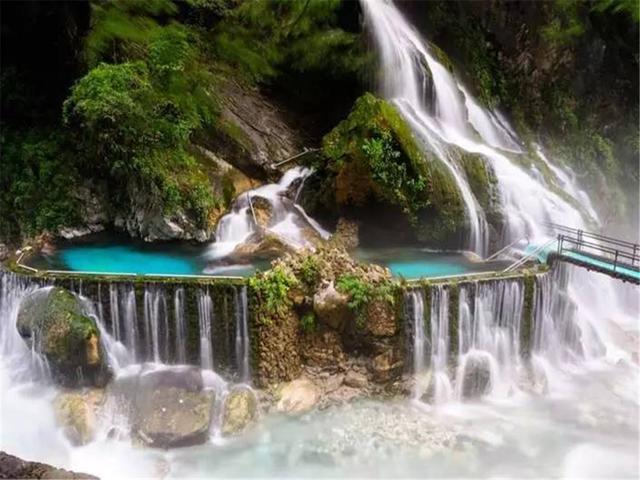

螺髻山风景区
螺髻山风景区位于四川省普格县，总面积2400平方公里，其中主要景区面积1083平方公
里，主峰海拔4359米。螺髻山之名来源于与峨眉山的"姊妹"关系，"峨眉山似女人蚕蛾之
眉，螺髻山似少女头上青螺状之发髻"。
著名景点：螺髻九十九里，姐妹湖，干海子，黄龙潭，黑龙潭等
螺髻九十九里
螺髻九十九里西昌螺髻九十九里 邀享世界最大温泉瀑布螺髻·九十九里位于凉山州首府西
昌市以南39公里处，国家重点风景名胜区、国家4A级旅游景区。螺髻九十九里是螺髻山景
点最为集中的区域，是螺髻山的核心景区，与邛海湿地、泸沽湖并称为凉山州三大必游景
点。核心景区纵长九十九里，一里一个景，故名螺髻·九十九里。螺髻·九十九里由百瀑谷、
螺髻第一峰、云端之上、原始森林四大景观群组成。百瀑谷自然天成、林木葱郁、花木俊
秀、灵崖异石、飞瀑流泉，这里瀑布成群，且形态各异，如彩虹瀑布、孔雀瀑布等。螺髻
九十九里温泉瀑布集观赏、养生、娱乐于一体，是螺髻山五绝之一。